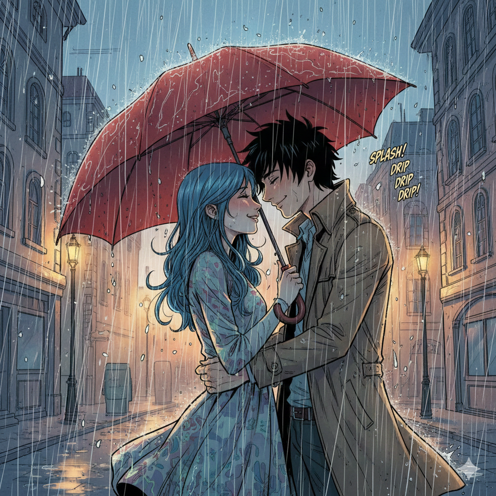
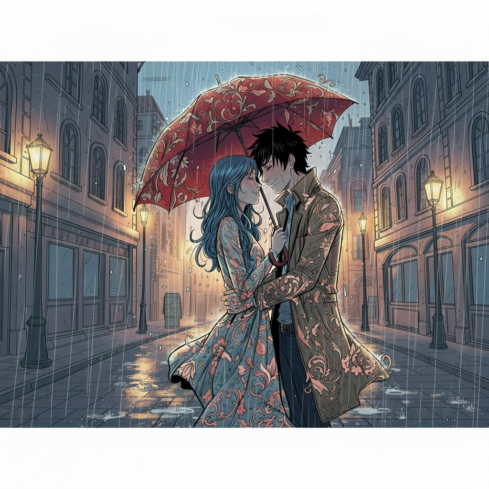

A heartwarming anime-style scene depicting a couple sharing a quiet, intimate moment
amidst a downpour. Where cool rain meets warm light, and unity blossoms under crimson shelter
Art Style
Alessandro Barbucci
Aspect Ratio
16:9 Widescreen
Scene Count
5
Quality
8K Masterpiece
Final Result
Romance and rain in Alessandro Barbucci's signature style
The Original Song
A cinematic Sinhala ballad reimagined as a nostalgic electronic duet
මතකද හැන්දෑවේ (Mathakada Handawe) — Remember That Evening
This project is built around "මතකද හැන්දෑවේ" — a hauntingly beautiful Sinhala duet from
the 2011 cricket film Sinhawalokanaya. The song paints a bittersweet landscape of
fading stars, rain-soaked memories, and a love that lingers as feeling long after the person has gone. I
reimagined it by translating its poetic Sinhala imagery into atmospheric English and transforming the
acoustic production into a 2026 Melodic Pop soundscape — pulsating synth bass, atmospheric rain
textures, and crisp electronic drums with a cinematic, nostalgic quality.
From acoustic Sinhala ballad to atmospheric electronic pop
Creative Process
The reimagination preserved the song's aching nostalgia and rain-drenched imagery while transforming it
across three layers: translating the lyrics into emotionally vivid English that
captures the "fading stars" and "purple darkness" metaphors, restructuring the flow
into a modern chorus-hook-verse format with a powerful synth-driven final chorus, and
reimagining the sonic palette from an acoustic film ballad to a 2026 Melodic Pop
production — atmospheric rain textures woven into the mix, pulsating synth bass, and crisp electronic
drums creating a cinematic, nostalgic soundscape.
[Intro - Sound of soft rain and a lonely
piano melody][Chorus - Emotional and Building]
Stars fading in the sky
Like they're starting to cry
In the dark, all alone
This house is not a home
I'm sinking in the deep
Promises we couldn't keep
Remember how it felt back then?
Holding me close, again and again.
[Hook - The "Rain" Motif]
Do you remember that night?
Under the dark purple light?
Lost in the summer rain
Drowning out all the pain
Yeah, we were soaked in the rain
Drowning out all the pain.
[Verse 1 - Rhythmic Duet]
Lonely days, they never leave
It's a ghost, I still believe
Beautiful feelings, girl it's true
Every thought is still of you
The way you stood right by my side
With nowhere left for us to hide
(Remember that night...)
[Verse 2 - Smooth and Flowing]
Wrapped in a sigh, so warm and sweet
Walking down that empty street
Is this a dream or just a song?
Where do we even belong?
You were the only life I knew
Everything I did was for you.
[Final Chorus - Full Production, Powerful Synths]
Stars fading in the sky!
I'm sinking in the deep!
Do you remember that night?
Under the dark purple light?
Lost in the summer rain
Drowning out all the pain!
[Outro - Rain sound returns with a fading piano]
Do you remember?
Under the purple sky...
In the rain.
[End - Thunder clap and Fade]
"The Red Umbrella's Promise" explores the intimate geometry of shared shelter—how a simple object becomes
a threshold between exposure and protection, isolation and togetherness. The illustration masterfully
contrasts cool, blue-toned rainy atmosphere with warm, inviting amber glow from streetlights, while the
vibrant crimson umbrella serves as both literal shelter and symbolic promise. The unique stylistic
choice
to blend ornate umbrella patterns into the characters' clothing creates visual metaphor: unity isn't
proximity but shared identity, two people becoming extensions of the same protective canopy.
Alessandro Barbucci Influence
The project draws heavily from Alessandro Barbucci's distinctive style—known for large expressive
eyes, curvy and organic line work, and sophisticated "candy-colored" palettes. Barbucci, celebrated
for works like "Sky Doll" and collaborations on "W.I.T.C.H.," brings European comic sensibility to
anime influences, creating characters with emotional depth conveyed through subtle facial
expressions
and flowing, decorative line work. His signature approach—combining realistic emotional beats with
stylized aesthetic flourishes—makes him the perfect reference for intimate romantic scenes that
balance fantasy and genuine feeling.
Prompt Strategy: Contrast & Texture
The project employed a "Contrast & Texture" approach, deliberately stacking quality modifiers
("Masterpiece," "8K," "Ultra-detailed") with texture-heavy keywords ("intricate floral embroidery," "wet
cobblestone," "volumetric rain"). This technique forces the AI model to prioritize high-frequency detail
rendering—the fine patterns on the umbrella, the individual raindrops, the texture of wet fabric
clinging
to skin.
Lighting keywords proved equally essential: "tungsten glow," "volumetric rain,"
and "amber streetlights" created dimensional separation between subjects and background. The warm-cool
color contrast (amber vs. blue) wasn't just aesthetic choice but compositional strategy—it focuses
viewer
attention on the warmth shared between the characters while the cold rain emphasizes their isolation
from
the surrounding world.
Technical Breakthrough: Early renders made rain appear as static noise rather than
dimensional atmosphere. Adding "volumetric rain" and "water splashing on cobblestone" gave the
weather depth and physicality. Similarly, when the ornate umbrella patterns initially clashed with
the busy background, "sharp focus on eyes" and "selective depth of field" centered viewer attention
on the couple's faces while keeping decorative details visible but subordinate.
Tools & Technology
The creative toolkit behind the umbrella
Nano Banana Pro
Veo 3.1
Topaz Gigapixel
DaVinci Resolve
SUNO Pro
Canva
Image Generation Process
From initial prompt to final composition
Step 1: Style & Subject Mapping
The journey began with the initial prompt identifying key tokens: "Couple," "Umbrella," "Rain," and
"Alessandro Barbucci."
Style DNA Extraction
The AI pulls from training data Barbucci's distinctive characteristics: large expressive eyes that
convey complex emotions, curvy and organic line work that creates flowing movement even in static
images, and the specific "candy-colored" yet sophisticated palette that balances whimsy with
emotional maturity.
Default Canvas
The first image outputs as square (1:1) format—the default "balanced" canvas the model uses to
establish character designs and emotional mood without compositional distraction.
Step 2: Geometric Re-framing
Transitioning to 16:9 widescreen ratio required the model to recalculate composition rather than
simply stretching the existing image.
The Technical Challenge
AI models often struggle moving from 1:1 focus to 16:9 while maintaining character consistency. The
system must "hallucinate" what exists to the left and right of the original frame—the European
buildings, the cobblestone street, the falling rain—while keeping the couple centrally positioned
and
visually dominant.
Refinement Process
Through iterative attempts, the model pushes the virtual "camera" back, creating wide-angle
perspective
that fills the extra horizontal space without distorting character proportions. This outward
expansion
transforms intimate portrait into environmental scene, placing the couple within context rather than
against empty backdrop.
Step 3: Aesthetic Layering
The request for "more flowery, artistic lines" triggered secondary stylistic refinement focusing on
Barbucci's signature organic line work.
Line Weight Variation
The AI adjusted ink line thickness to become more varied and expressive, tapering lines at their ends
to mimic traditional dip pen or brush techniques. This creates visual rhythm and emphasizes movement
over static containment.
Organic Movement Integration
In Barbucci's style, hair and clothing exhibit constant "flow" even in rain-soaked stillness. The AI
added pronounced curves to the woman's blue hair and the man's trench coat, creating sense of
arrested
motion within the frozen moment—as if we're seeing a single frame from continuous dance.
Step 4: Cleaning & Component Removal
Earlier iterations included "comic book wording" (sound effects like "Splash!" and "Drip!") because
the AI associated Barbucci's name with his graphic novel work.
Text Elimination
The instruction to "remove wordings" forced the model to re-render areas where text existed. Rather
than leaving empty space, the AI intelligently replaced text-heavy regions with appropriate
background
elements: additional rain streaks, more detailed European architecture, and enhanced atmospheric
effects.
Focus Refinement
This cleaning process ensured focus remained purely on the visual art and emotional content rather
than narrative text, transforming the piece from comic panel into standalone illustration.
Step 5: Final Composition - Wide Angle Perspective
The culminating step involved achieving true wide-angle environmental immersion through "outpainting"
logic—mentally expanding the street scene beyond the original frame.
Environmental Expansion
The model added extensive cobblestone road detail stretching to the frame edges, additional European
buildings creating architectural depth, and the warm amber glow of streetlamps positioned at the
periphery. These additions give viewers the sensation of standing in the rainy alleyway with the
couple rather than merely observing a portrait.
Atmospheric Integration
The expansion maintained consistent rain physics, lighting behavior, and architectural style
throughout
the widened frame, ensuring the couple remains the emotional center while the environment provides
narrative context and spatial grounding.
Evolution of the Umbrella
The visual journey from concept to cinematic romance

Image 01
Initial Character Establishment
The foundational square composition establishing character designs in Barbucci's signature
style—large expressive eyes, flowing hair, and the iconic red umbrella creating intimate
shelter.
The warm amber light beneath the canopy contrasts with cool blue rain, introducing the
temperature-based emotional coding that will define the entire project. The couple's close
proximity and shared space under the umbrella establish the central metaphor: protection through
togetherness.

Image 02
Widescreen Environmental Integration
The successful 16:9 transformation revealing the European cobblestone street, architectural
context, and atmospheric rain environment. The couple now exists within a fully realized world
rather than against neutral backdrop. The flowery, artistic lines become more pronounced—notice
the enhanced curves in hair and clothing that create organic flow. The ornate umbrella patterns
begin to visually echo in the characters' garments, foreshadowing the symbolic unity that will
climax in the animated sequence.
Image 03
Final Refined Composition
The culmination of all refinements: text removed, focus sharpened on eyes and facial expressions,
volumetric rain creating dimensional atmosphere, and perfect balance between intricate detail
(umbrella patterns, wet cobblestone texture) and emotional clarity (the couple's intimate
connection). The warm streetlamp glow edges the frame without washing out the purple-blue rain
tones. This is the definitive image—every technical element serves the emotional core: two
people
finding warmth together in the cold rain, their shared shelter becoming shared identity.
Animation Narrative Sequence
Five acts of rain, romance, and surrender
Scene 01
The Golden Circle
The scene opens with tight focus on the red umbrella canopy. Raindrops create rhythmic percussion
as they strike the fabric—pitter-patter like a heartbeat. Beneath this crimson shelter, lighting
bathes the couple in warm amber and gold. They sway slowly together, almost motionless, locked
in
intimate stillness. Steam rises from their whispered breath, visible in the cool air. The boy's
hand remains steady on the umbrella handle—deliberate protection, shielding her from the world
beyond their shared circle of warmth.
Visual Theme
The umbrella as sanctuary. The contrast between warm protection inside and cold exposure outside
establishes the emotional stakes: safety through togetherness.
Scene 02
The First Drop
The girl tilts her face upward, blue hair shimmering with moisture. She extends one hand beyond
the umbrella's edge, catching a stray raindrop on her fingertip. A playful smile touches her
lips—the expression of someone about to make a choice. Slowly, deliberately, she untwines
herself
from his protective embrace. She takes a tentative step backward, crossing the threshold where
the
umbrella's shelter ends. The warm amber light illuminating her face fades, replaced by soft
cinematic blue as rain drenches her skin. She closes her eyes, tilts her head back fully, and
surrenders to the downpour. Arms spread wide, she spins once—a moment of pure abandon.
Symbolic Pivot
The transition from protected to exposed becomes choice rather than accident. Her willing
surrender to the rain represents vulnerability as agency, openness to experience over safety.
Scene 03
Surrender to the Storm
The boy watches her transformation, momentarily paralyzed by her sudden radiance in the rain. His
gaze shifts between the umbrella in his hand—his shield, his control—and her liberated form
spinning in the downpour. The decision crystallizes. With a decisive grin acknowledging the
absurdity and beauty of the moment, he tosses the umbrella aside. It tumbles away into the
alleyway shadows, its red fabric glowing faintly under a distant streetlamp like a discarded
flag. Rain instantly soaks through his clothes. Dark hair matts against his forehead. But he's
smiling—truly smiling—as he steps forward to join her in exposure.
The Turning Point
Abandoning the umbrella isn't giving up protection—it's choosing shared vulnerability over
solitary
safety. The umbrella's glow in the distance suggests what's been left behind: caution, control,
the need to shield oneself from experience.
Scene 04
The Dance of Two
He reaches for her hand and pulls her into spirited, breathless waltz. No music exists except the
splashing of boots in puddles and the heavy percussion of rain on cobblestone. They spin through
the street's center, completely drenched, completely alive.
The Movement
The camera circles them rapidly, blurring the tall European buildings into hazy streaks of grey
and
gold. Their rotation creates its own weather system—water spraying outward from their spinning
forms.
The Connection
He lifts her slightly. Her dress flutters like a wet silk wing, catching light and shadow. When
he
sets her down, he draws her tight against him—chest to chest, heartbeat to heartbeat.
Fantasy Element
The flowery line art patterns from their clothing—those ornate designs that echoed the umbrella's
decoration—begin to animate. They spiral and flow like living embroidery, suggesting their
physical connection has triggered something metaphysical. The patterns merge between them,
creating visual confirmation: they're no longer two people sharing space but a single entity
expressed through intertwined motion.
Scene 05
The Close
Movement slows. The world's noise fades to gentle hum—only rain remains, constant and patient.
They stand in the middle of the street, completely drenched, no longer seeking shelter. He cups
her face with both hands, water streaming between his fingers. She rests her palms flat against
his chest, feeling his heartbeat through soaked fabric. Their foreheads touch—the most intimate
geometry, creating private space even in open exposure.
The Halo Effect
Streetlamps positioned behind them catch falling rain, creating luminous curtain that surrounds
the
couple. Each raindrop becomes a falling diamond, a spark of light suspended in descent. They
exist
within this temporary constellation, two figures at the center of manufactured starfall.
Finale
The camera pulls upward slowly, ascending into the night sky. The European architecture recedes.
The
street becomes a ribbon of light and shadow. The couple shrinks to two small, glowing figures
locked in embrace—anonymous and universal. The image fades to black, but the glow persists in
memory: two people who found that the greatest shelter isn't protection from the storm but
willingness to stand in it together.
Technical Insights & Reflections
Lessons from creating romantic rain
Texture as Emotional Depth
The "Contrast & Texture" prompt strategy proved that high-frequency detail rendering isn't mere technical
flourish—it's emotional intensifier. The intricate floral embroidery on the umbrella, the individual
raindrops caught mid-fall, the wet cobblestone reflecting streetlamps: these textures create tactile
reality that grounds fantasy elements. When viewers can almost feel the cold rain and see the fabric's
weave, the emotional beats land harder because the physical world feels consequential.
Volumetric Rain Physics
The breakthrough from "static noise" to "dimensional atmosphere" demonstrates the importance of physical
modeling in environmental effects. "Volumetric rain" didn't just add visual complexity—it created depth
perception through atmospheric perspective. Rain closer to camera appears larger and more defined;
distant
rain becomes softer and more diffuse. This layering transforms flat illustration into spatial
environment
where characters exist within weather rather than against it.
Warm-Cool Color Psychology
The deliberate contrast between warm amber (safety, intimacy, shared space) and cool blue (exposure,
vulnerability, the wider world) creates subconscious emotional coding. Viewers instinctively read
temperature as emotion: warmth equals connection, cold equals isolation. The genius lies in making
characters choose to leave warmth for cold together, redefining cold exposure as shared intimacy. The
umbrella's red—neither warm nor cool but vibrant and attention-commanding—serves as the promise that
bridges both states.
Pattern as Unity Symbol
The unique choice to blend ornate umbrella patterns into the characters' clothing elevates simple visual
consistency into profound metaphor. In the final animated sequence, when these patterns begin to move
and
merge between the couple, it visualizes an invisible truth: intimacy isn't just proximity but shared
identity, two individuals becoming extensions of a single protective reality. The umbrella they abandon
still shelters them—not as object but as internalized connection.
Project Legacy: "The Red Umbrella's Promise" proves that AI-generated art can engage
seriously with emotional subtlety when prompting strategies prioritize psychological depth over surface
spectacle. The Barbucci style reference provided more than aesthetic template—it offered emotional
framework emphasizing expressive eyes, organic movement, and sophisticated color relationships. The
iterative refinement process (square to widescreen, static rain to volumetric, text removal, focus
adjustment) demonstrates that exceptional AI art requires conversation between creator and model, each
generation informing the next. Most significantly, the project shows that the most powerful symbols are
often the simplest: a red umbrella becomes promise, shelter, shared identity, and ultimately something
worth abandoning to stand together in the rain—because the truest protection isn't avoiding the storm
but
facing it with someone who makes you feel warm even when you're drenched.